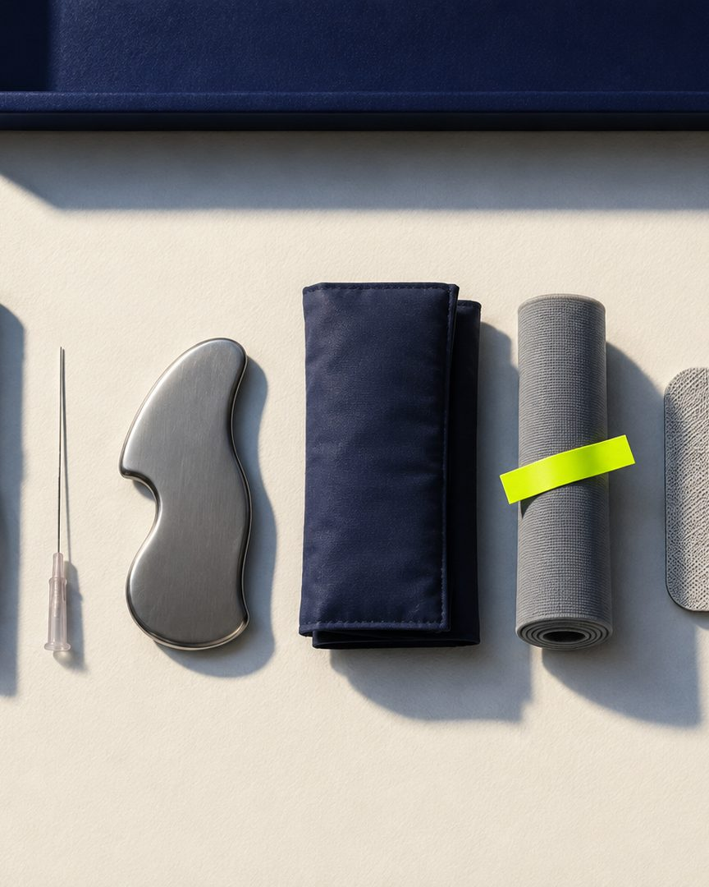
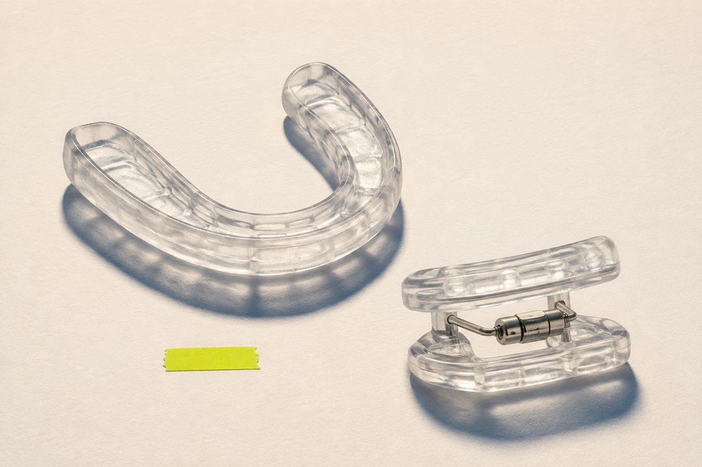
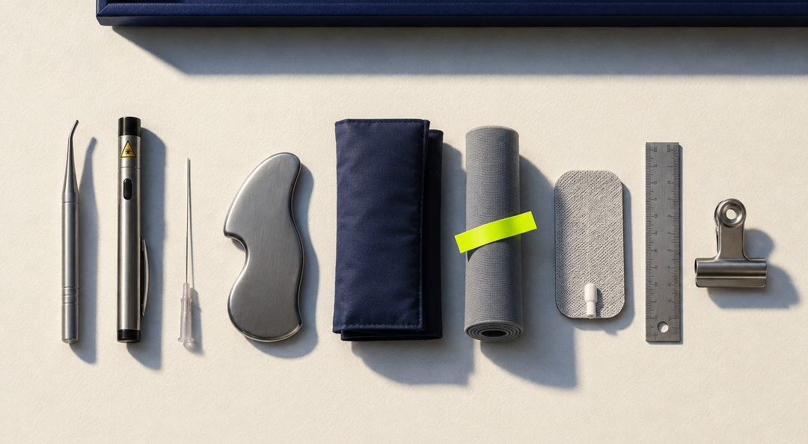
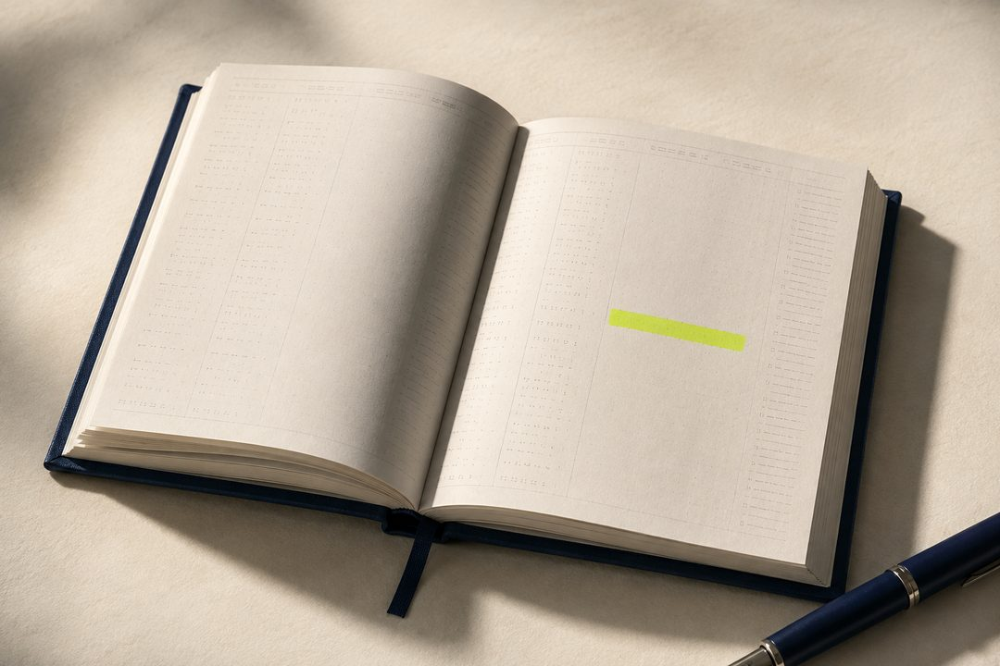
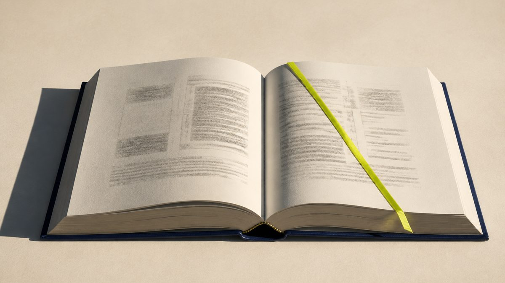
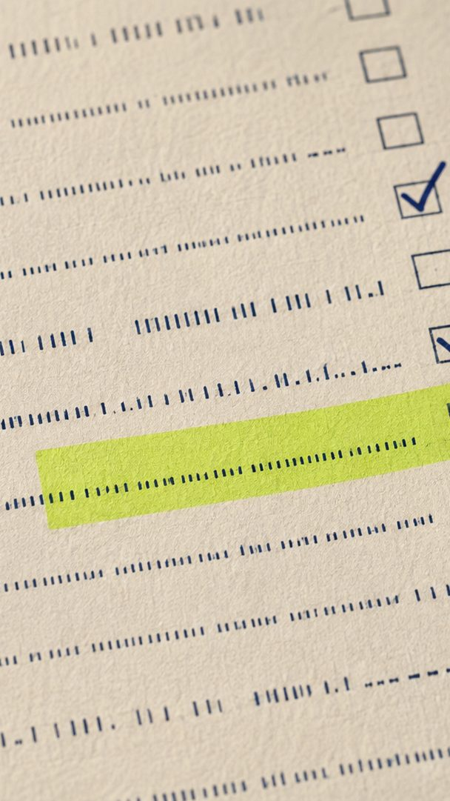
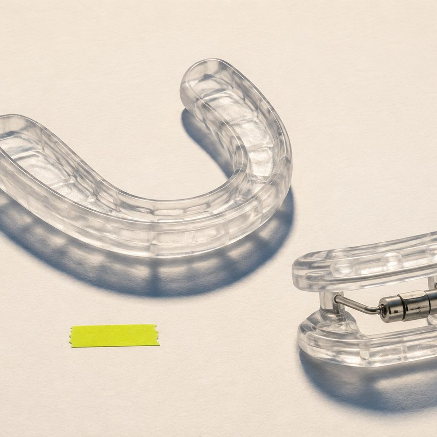
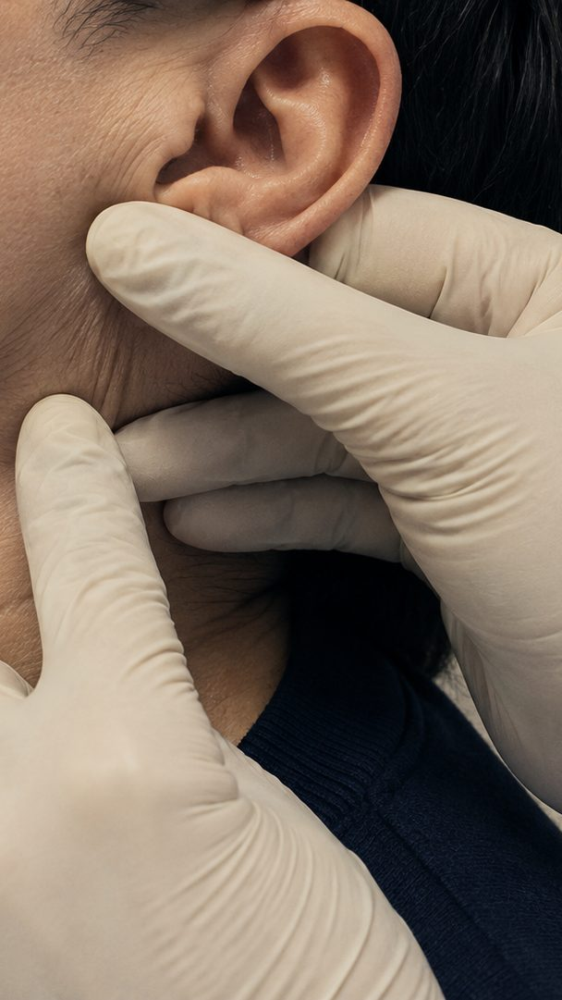
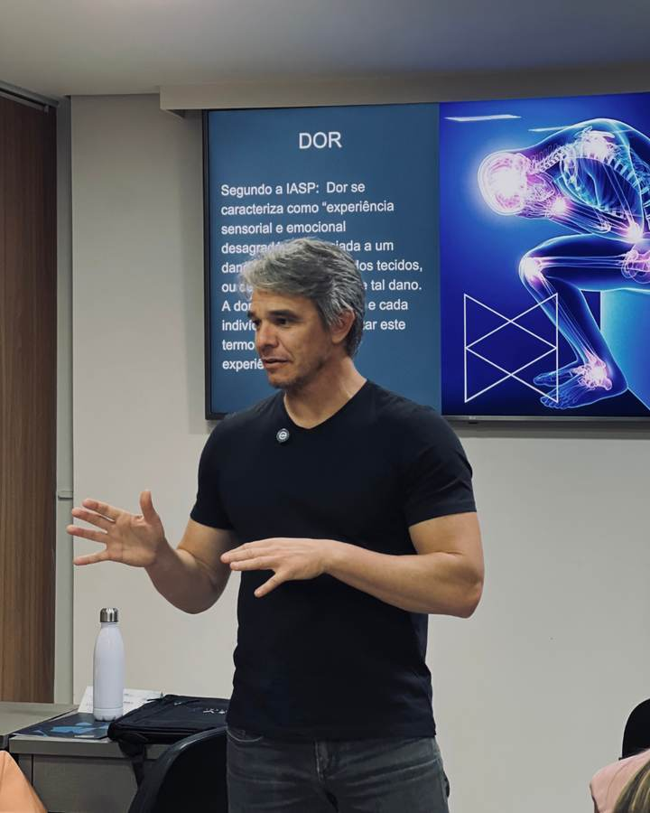
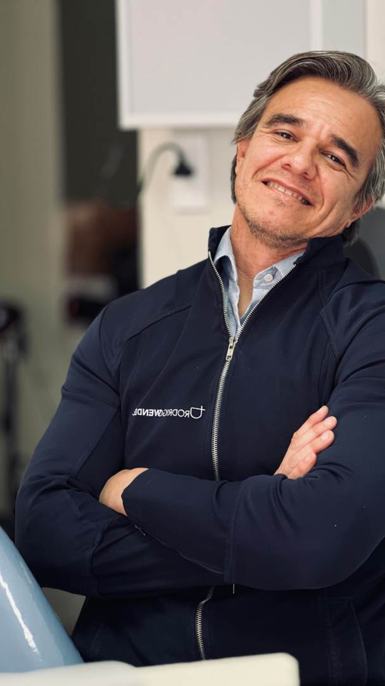

“63,9% dos dentistas confundem sinal de bruxismo com sinal de DTM” como dado-âncora do feed
Número vetado, sem fonte primária. O lugar dele é ocupado por três dados verificados — ver § 06.3, linha Educativa
verificacao-dados-copy.md Alegação 1
03
“Prevalência de 40% a 60% da população”
Cerca de 3 em cada 10 adultos. Duas meta-análises convergem em torno de 30%
verificacao-dados-copy.md Alegação 2
04
“A logo trava a troca do arroba”
A logo existe desde 20/08. O que falta é o Rodrigo renomear o perfil e aprovar o selo como avatar
PENDENCIAS.md bloco D, item D3 · bloco C
05
Setembro como futuro: “a partir de setembro”
Setembro é agora. A Fase 2 abre neste mês, com a turma marcada para 23/02/2027
estrategia-campanha.md § 7
Um sexto item destrava, em vez de travar
Existem nove fotos do Rodrigo liberadas desde 27/08, com uso indicado por arquivo. A v1 foi escrita quando não havia nenhuma.
Os formatos 08, S6, P2 e P4 saem do papel nesta versão e já aparecem com foto real abaixo.
A décima foto, o atendimento com ultrassom, continua proibida: falta o consentimento assinado da paciente e o rosto é identificável.
assets/fotos-rodrigo/README.md · PENDENCIAS.md D9
Suposição declarada
A Fase 1 nunca chegou a publicar: o perfil ainda não foi renomeado. Este guia mantém as proporções de mix exatamente como a linha editorial de 02/08 as definiu e resolve o descompasso pela ordem, não pela porcentagem.
O bloco de fundação — as nove pautas do § 06.6 — roda comprimido nas três primeiras semanas, e o mix da Fase 2 passa a contar a partir dali. É sequenciamento, não mudança de mix.
§ 00
A régua antes das peças
O dentista lê isso entre um paciente e outro, na tela do celular apoiada no balcão da recepção. É essa a condição real de leitura: tela pequena, som desligado, quinze segundos. Todas as decisões deste módulo saem daí, e não do que fica bonito no monitor.
SISTEMA DE CONTEÚDO · Academia DTM · v1
CANVAS feed 1080x1350 (4:5) · story 1080x1920 (9:16) · miniatura de perfil 4:5
MARGEM 64 px em feed · 64 px lateral e 96/120 px no topo e base do story
PALETA papel domina · navy ancora · fluor entra uma vez por peça, nunca como fundo,
nunca como texto sobre papel · cobalto e menta ficam fora do conteúdo social
TIPO display Archivo 800 · corpo Hanken 400, piso de 36 px · rótulo e dado em Space Mono 700
ARRANJOS três, e só três: RODAPÉ (texto ancorado embaixo) · REGISTRO (rótulo no topo,
texto descendo) · CENTRO (um elemento em escala, contexto em volta)
GESTO um por peça: a junta abrindo o texto, ou o símbolo sangrando a borda — nunca os dois
ASSINATURA arroba em mono no rodapé do card · lockup horizontal só na capa e no fechamento
GRÃO viaja para dentro do arquivo exportado, 4 a 5 por cento
PROIBIDO emoji · seta desenhada · "arrasta pro lado" · contador · selo de desconto ·
print com círculo vermelho · ícone de banco · foto de banco de imagem
Leia antes de olhar qualquer peça
Todo texto dentro das artes desta página é exemplo de preenchimento. Foi escrito pela Inception a partir do universo clínico do Rodrigo e da linha editorial de 02/08, para mostrar quanto texto cabe e como ele se comporta no canvas. Nada aqui é fala dele, nem pauta aprovada, até que ele valide.
Nenhum número real entra nos masters. Onde o formato pede um dado, a arte mostra o campo zerado, no padrão 00,0 por cento, e a linha de fonte declarada como campo a preencher. Número entra na peça com a referência completa na mão, nunca antes: é a regra 27 do contrato, e é também o que o próprio card de dado ensina.
Uma exceção, e ela é a demonstração da regra. As três peças do § 02.1 carregam número real, com a referência impressa dentro da arte.
Elas não são masters: são exemplos montados, com os dois dados verificados em 03/09. Existem para mostrar como a peça se parece depois de o campo de fonte ser preenchido.
§ 01
O perfil — a primeira peça que ninguém desenha
O dentista que descobre o @academiadtm por um comentário ou uma indicação decide em segundos se aquilo é uma escola ou mais um perfil de curso. Ele decide olhando quatro coisas: o avatar, a bio, a fila de destaques e a grade. Nenhuma delas é um post, e por isso todas costumam ficar sem dono.
1.1O posicionamento, e os dois perfis
O que ele é
O lugar onde o Rodrigo ensina DTM para quem ainda não sabe: o clínico geral ou o especialista de outra área que recebe esse paciente toda semana e não sabe o que fazer com ele. Autoridade construída em público, peça por peça.
O que ele não é
Não é o Curso DTM relançado com nome novo, não é conteúdo de paciente reaproveitado e não é vitrine de guru. Não depende do nome do método para existir: quem assina é a Academia DTM, que já está aprovada.
O gancho que sustenta o feed inteiro
A prevalência de DTM é alta e a confiança diagnóstica do clínico geral é baixa. O feed existe para fechar essa distância, um post de cada vez.
@rodrigowendeldtm
@academiadtm
Fala com
Paciente
Dentista
Assunto
Dor de mandíbula, tratamento, captação de consulta
Diagnóstico, arsenal terapêutico, negócio do consultório
Vocabulário
Linguagem leiga, sem sigla e sem nome de protocolo
Assertivo, técnico — sem virar aula hermética. RDC/DC, ticket e margem entram; sigla fora do dia a dia do clínico geral vem explicada na primeira aparição
Quem assina
O rosto do Rodrigo
O selo da instituição
Status
cerca de 6.800 seguidores
objeto deste guia
Decisão do Rodrigo, registrada em 02/08 · é ela que organiza todo o resto
A régua que vale antes de qualquer discussão de formato: um post sobre dor de mandíbula em linguagem leiga no @academiadtm é post no perfil errado. Não é questão de qualidade da peça — é endereço.
E a régua de tom, decidida em 05/09: com paciente, linguagem leiga. Com profissional, assertiva — e não totalmente técnica.
O leitor daqui é clínico geral, não especialista em DTM. Quem escreve como se todos já soubessem o protocolo perde exatamente quem a Academia quer formar.
Os dois perfis convivem, não competem. O clínico continua como está; nada migra dele para cá.
Nada de repost cruzado. Conteúdo de paciente republicado aqui derruba a leitura de instituição em um post.
O desenho dos dois públicos está no F6 do Kit de Frameworks, pronto para virar peça — ver § 05.5 e § 06.1.
1.2O avatar
110 px · perfil
56 px · post
32 px · comentário
Selo navy, símbolo fluor a 62 por cento do lado · arquivo enviado em 1080 × 1080
O avatar é o selo, nunca o lockup completo. A 32 px, o texto "Academia DTM" vira um borrão cinza e o perfil perde a única chance de ser reconhecido na lista de comentários.
Uma versão só, para sempre. Avatar que muda a cada campanha zera o reconhecimento acumulado. O selo navy com símbolo fluor é o padrão; o selo invertido fica para adesivo e carimbo.
Sem foto do Rodrigo no avatar do @academiadtm. O rosto dele assina o perfil clínico. Aqui quem assina é a instituição, e essa separação é o que sustenta os dois perfis convivendo.
Enviar em 1080 × 1080, com o símbolo já centrado: o Instagram recorta o círculo e come as bordas.
Por quê: o piso de redução do selo no contrato é 32 px, exatamente o tamanho que o avatar assume no comentário. O símbolo Trama foi desenhado para sobreviver aí; o texto do lockup não.
1.3A bio
OPÇÃO A · 149 caracteres
Ciência que vira prática em DTM — para dentistas.
Dr. Rodrigo Wendel · 25+ anos · Zurique · +8 mil pacientes
Viver de DTM ↓
OPÇÃO B · 148 caracteres
Formação em DTM para quem não aceita achismo.
Dr. Rodrigo Wendel · 25+ anos · Zurique · +8 mil pacientes
Viver de DTM ↓
Duas opções fechadas em 02/08, ambas dentro do limite de 150 caracteres
A escolha é do Rodrigo e não trava nada. Bio se troca em dez segundos; nenhuma peça depende dela.
Três linhas, nesta ordem: a tese, a credencial em mono-fato, o destino. A quarta linha não existe.
Sem emoji e sem registro de conselho, aqui como em qualquer material público.
A seta desce para o link, e é o único elemento gráfico permitido no campo.
Ressalva de número · bloqueio 03
“+8 mil pacientes” e “25+ anos” aparecem em versões diferentes nos materiais: 6 mil contra 8 mil atendimentos; 25 contra cerca de 30 anos.
Antes de a bio subir, o Rodrigo escolhe uma versão de cada, e ela passa a ser a única em todo o material.
1.4Os destaques
Sobre
Guarda-chuva
Bandeira
Casos
Viver de DTM
Cinco capas, na ordem da linha editorial · arquivo 1080 × 1920, o Instagram recorta o círculo central
Capa de destaque não leva texto dentro. O nome vive no rótulo do Instagram, que corta por volta do décimo caractere. Texto dentro do círculo some no recorte e briga com o rótulo.
O ritmo alterna navy e papel, sempre nesta ordem. A alternância é o que impede a fila de virar cinco medalhas iguais.
Uma capa invertida na fila, e só uma. O selo fluor marca o destaque da formação, que é o único com função comercial. É o mesmo princípio do fluor no resto do sistema: aparece onde importa decidir.
O conteúdo de cada um, na ordem
#
Rótulo
O que abriga
Frames
Fonte do conteúdo
01
Sobre
Trajetória: o estágio com o professor Norberto, a UNIFESP, Zurique, a coordenação de curso desde 2014. Cartão de visita, não currículo
Casos clínicos anonimizados narrados por ele. Sem nome, sem imagem de paciente, sem vídeo
3 a 5
banco-de-historias case-01, case-02, case-03
05
Viver de DTM
A formação. Fica magro até a página existir e cresce na Fase 2
2 a 3 depois 6+
produto/oferta-viver-de-dtm
A ordem vai de quem ele é até o que ele vende, e não muda
1.5A grade do perfil
Série
Bruxismo não é DTM
O guarda-chuva

Tudo vira prego
Mito
A placa resolve
Bastidor
00
campo de número
Aula
Anamnese que investiga
AcademiaDTM
Nove publicações seguidas · cada miniatura em 4:5, do jeito que a grade recorta · duas com imagem, sete em tipografia
A grade não é um mosaico desenhado. Todo post novo empurra os outros para a direita, e qualquer composição fixa se desfaz na semana seguinte. Quem desenha grade em quadriculado refaz o desenho toda terça.
A única regra que sobrevive ao empurrão é a alternância: nunca publicar dois cards de mesma polaridade em sequência. Depois de um card navy vem um card de papel, e vice-versa. Isso mantém o xadrez vivo em qualquer posição.
No máximo três cards navy visíveis nas primeiras nove miniaturas. Passou disso, a grade fecha e o perfil ganha peso de agência, não de escola.
Um card com campo de foto a cada seis publicações. Grade só de tipografia vira parede de citação; grade só de foto vira álbum.
A miniatura é lida a 145 px de largura. Se o display do card tem mais de sete palavras, some. Esse é o teste, e ele roda antes de publicar: reduza a arte para o tamanho de uma unha e veja o que restou.
Por quê: a grade do perfil hoje mostra a miniatura em 4:5, o mesmo formato do post. Publicar em 4:5 é o que garante que a arte apareça inteira, sem recorte pelo centro.
Duas com imagem, e não mais: a proporção vem da própria régua acima — uma peça com imagem a cada seis publicações. As nove miniaturas abaixo, no § 01.6, mostram o que cada uma dessas duas vira em tamanho de leitura.
1.6A grade montada — seis posts e três stories com imagem
A grade acima mostra como o perfil se organiza. Estas nove peças mostram como cada casa dela se parece por dentro, com a imagem no lugar e o texto no tamanho real.
Todas usam as ilustrações já produzidas para o projeto. Nenhuma tem texto sobre linha ou sobre elemento: ou o texto vive sobre o scrim navy, ou vive sobre área limpa de papel.
O fluor nunca vira fundo. E a copy continua sendo exemplo de preenchimento, como manda o § 00.
M1 · Capa · Educativa
1080 × 1350
Série · Diagnóstico
DTM não é um diagnóstico só
@academiadtm01 / 08
Arranjo rodapé · imagem cheia, scrim navy, todo o texto no terço de baixo
A crença número um do § 06.2 em forma de capa. O texto inteiro mora sobre o scrim — nada encosta na trama do papel nem na fita. O topo fica livre de propósito: é ali que a lombada respira.
M2 · Card interno · registro
1080 × 1350

02
A placa é uma ferramenta, não o tratamento
Sem investigar a causa, ela administra o sintoma e o paciente volta.
@academiadtm02 / 08
Arranjo registro com faixa de imagem · imagem em cima, texto em papel limpo embaixo
O corte em 45 por cento da altura é o que separa imagem de texto sem precisar de scrim. Serve a qualquer card educativo com objeto: a fotografia responde “do que estamos falando” antes da primeira palavra.
M3 · Card de leitura em camadas
1080 × 1350
Protocolo
Quarenta perguntas antes de qualquer exame
@academiadtm04 / 08
Gesto do octógono · a janela ocupa o alto, o texto ocupa a base
A janela em octógono é o recorte de foto do sistema, no § 05.4. Aqui ela entra desalinhada à direita — a quebra de grade da peça, e a única. Nenhuma palavra encosta na moldura.
M4 · Citação · Tese
1080 × 1350

Bandeira
Pra quem só tem martelo, tudo é prego
Dr. Rodrigo Wendel
@academiadtm05 / 08
Faixa superior em papel, texto em navy embaixo · frase do léxico fixo, sempre assinada
A imagem é o argumento: nove ferramentas em fila, uma marcada. Ela sustenta a frase sem ilustrá-la ao pé da letra. A faixa preserva as cores da fotografia — scrim aqui apagaria justamente as nove ferramentas que fazem o ponto.
M5 · Persuasiva · a agenda
1080 × 1350

Oportunidade
Ele já está na sua agenda desta semana
@academiadtm06 / 08
Faixa invertida · texto em navy no alto, imagem em papel embaixo · a assinatura fecha o bloco de texto, nunca a fotografia
A polaridade inverte a M2: aqui o navy está em cima e a fotografia embaixo. Serve quando a frase precisa vir antes da imagem — e é a que melhor sobrevive ao recorte 1:1 do gerenciador.
M6 · Fechamento com pedido
1080 × 1350

Fim
Guarda para a próxima consulta
Salvar
AcademiaDTM08 / 08
Arranjo rodapé · único card do carrossel com lockup · um pedido só
O fechamento troca de fundo para avisar que a leitura acabou, e a faixa de imagem no topo fecha o ciclo aberto pela capa: o mesmo volume, agora aberto. Um pedido apenas — dois derrubam os dois.
MS1 · Story · anúncio da série
1080 × 1920

Faixa do Instagram · 250 px
Faixa do Instagram · 250 px
Hoje no feed
A anamnese que investiga
Carrossel novo, oito cards
@academiadtm
Imagem cheia com scrim · o texto ocupa só o miolo, acima da faixa de 250 px
MS2 · Story · educativo
1080 × 1920
Faixa do Instagram · 250 px
Faixa do Instagram · 250 px
Guarda-chuva

Uma ferramenta entre várias
@academiadtm
Janela em octógono no miolo · rótulo acima, display abaixo, nada encostando na moldura
MS3 · Story · bastidor
1080 × 1920

Faixa do Instagram · 250 px
Faixa do Instagram · 250 px
A palpação que a faculdade não ensinou
@academiadtm
Enquadramento do queixo para baixo · sem rosto · o texto nunca cruza a mão
De onde vem cada imagem
Peça
Arquivo
Como ela entra
M1
m1-caderno-lombada-45.jpg
Cheia, com scrim navy
M2
m2-placa-oclusal-32.jpg
Faixa superior, 45% da altura
M3
m3-ficha-anamnese-11.jpg
Janela em octógono
M4
m4-arsenal-faixa.jpg
Faixa superior, 44% da altura
M5
m5-agenda-marcada-32.jpg
Faixa inferior, 42% da altura
M6
m6-caderno-aberto-169.jpg
Faixa superior, 34% da altura
MS1
sa-ficha-anamnese-916.jpg
Cheia, com scrim navy
MS2
sb-placa-oclusal-11.jpg
Janela em octógono
MS3
sc-mao-luva-atm-916.jpg
Cheia, com scrim navy
Recortes gerados a partir dos masters em outputs/imagens · JPEG de qualidade 82 na largura em que a peça aparece
Três maneiras de a imagem entrar, e só três. Cheia com scrim, faixa em uma das pontas, ou janela em octógono. Um quarto jeito só com aval da direção de arte, como manda a régua dos arranjos.
Texto nunca sobre linha nem sobre elemento. Em imagem cheia ele mora no scrim; em faixa e em janela, na área limpa de papel. Não existe caso intermediário — palavra em cima de textura é palavra que some no celular.
O fluor da fotografia não conta como o fluor da peça. A fita fluorescente já é o acento da imagem: se o card também levar rótulo em fluor, viram dois, e a regra do § 05.3 cai.
Nenhuma destas imagens substitui foto do professor em bloco de autoridade, de aula ou de prova. Ali só entram as nove liberadas em 27/08.
Por que ilustração de objeto e não foto de banco: objeto clínico fotografado em papel creme, com luz dura e sombra navy, é a tese estética do projeto em forma de imagem. Banco de imagem entrega consultório azul-e-branco e sorriso — exatamente o que o § 00 proíbe.
§ 02
Feed — os nove formatos que cobrem tudo
Nove peças resolvem as cinco linhas editoriais inteiras. Elas não são nove desenhos diferentes: são três arranjos preenchidos de três maneiras. Quem entende isso monta um carrossel novo em vinte minutos; quem não entende, redesenha do zero toda semana. Todas em 1080 × 1350.
01 · Capa de carrossel
1080 × 1350
Série · Diagnóstico
Bruxismo não é diagnóstico de DTM
@academiadtm01 / 08
Arranjo rodapé · gesto: símbolo sangrando · sem corpo de texto
A capa é o anúncio do carrossel. Ela carrega uma frase e nada mais: display de até sete palavras, o rótulo da série no topo e a numeração discreta no rodapé. O símbolo sangra a borda uma vez, e essa é a quebra de grade da peça.
02 · Card interno · registro
1080 × 1350
02
O guarda-chuva
DTM não é um diagnóstico. É o nome que abriga quadros diferentes, com tratamentos que não se parecem entre si.
@academiadtm02 / 08
Arranjo registro · gesto: a junta · uma ideia por card
O card de trabalho do carrossel educativo. Rótulo numerado no topo, junta abrindo, display curto e um bloco de corpo com no máximo 32 palavras. Duas ideias no mesmo card viram duas ideias esquecidas.
03 · Card de citação no miolo
1080 × 1350
Bandeira
Pra quem só tem martelo, tudo é prego
Dr. Rodrigo Wendel
@academiadtm05 / 08
Arranjo centro · quebra de ritmo do carrossel · frase do próprio Rodrigo
Todo carrossel de sete cards ou mais precisa de um card que inverte a polaridade no meio. É ele que segura a leitura na hora em que ela costuma cair. A frase aqui é dele, não nossa, e por isso leva assinatura.
04 · Fechamento com pedido
1080 × 1350
Fim
Guarda para a próxima consulta
Salvar
AcademiaDTM08 / 08
Arranjo rodapé · único card do carrossel com lockup · um pedido só
O fechamento muda de fundo para avisar que a leitura acabou. Ele pede uma coisa apenas: salvar, comentar ou responder. Dois pedidos no mesmo card derrubam os dois.
05 · Post único de tese
1080 × 1350
Tese
Não sou dono da razão
O dado clínico não me dá razão, ele me obriga a olhar de novo.
@academiadtmDr. Rodrigo Wendel
Arranjo rodapé · a única peça onde uma palavra vai em fluor
Post solto, sem carrossel. O fluor marca uma palavra da frase, nunca duas, e só existe aqui porque o fundo é navy. Sobre papel, a mesma palavra ficaria ilegível.
06 · Card de dado
1080 × 1350
Dado
00,0%
campo do achado clínico que o número sustenta, até 14 palavras
Campo de fonte · periódico, ano e página, a preencher
Arranjo centro · o número é a imagem · linha de fonte obrigatória
O único lugar do sistema onde o fluor ocupa área grande, porque ali ele é o número-chave. O master sai com o número zerado de propósito: o dado só entra na arte com a referência completa na mão, e a linha de fonte é campo obrigatório, não enfeite. Dado sem origem, num público de dentista, vira motivo de desconfiança.
07 · Mito e fato
1080 × 1350
Mito
A placa resolve a DTM
Fato
É uma ferramenta entre várias
Sem investigar a causa, ela administra o sintoma e o paciente volta.
Arranjo registro em duas faixas · a divisão cai em 46 por cento, nunca no meio exato
O contraste é de polaridade, não de cor de alerta. Nada de vermelho, nada de X, nada de sinal de proibido: o erro comum aparece em papel e a correção em navy. A divisão fora do meio é o que impede a peça de parecer uma tabela.
08 · Capa de aula ou bastidor
1080 × 1350

Bastidor
O que entra na aula de diagnóstico
@academiadtm
Arranjo rodapé · scrim navy obrigatório sob o texto · foto liberada em 27/08 · ensinando-slide-dor.jpg
A foto entra por baixo e o texto nunca cruza o rosto. O scrim sobe do rodapé até 78 por cento da altura: legível sem apagar a imagem. Tratamento: saturação a 86 por cento e contraste levemente aberto, para a pele casar com o creme do papel.
09 · Prova social
1080 × 1350
Prova
Bloqueado · depoimento sem autorização de uso
Enquanto não houver liberação, a prova vem de caso clínico anonimizado narrado pelo Rodrigo.
Estrutura definida, conteúdo bloqueado · ver § 07
Os nove depoimentos existentes foram gravados no contexto do Instituto Ária e não têm autorização de uso para a Academia DTM. O formato fica pronto e vazio até a liberação chegar por escrito.
2.1O framework dentro do card
O kit desenha os nove conceitos em escala de documento: 600 px de largura, rótulo interno de 15 a 25 px. O canvas social tem 1080 px e piso de 36 px.
Os dois não se encontram sozinhos, e reduzir o framework até caber apaga o texto dele. Três peças montadas, três caminhos.
F1 no formato 02 · recorte
1080 × 1350
03 · Diagnóstico
DTM não é um diagnóstico
Cerca de dez quadros diferentes sob um único rótulo, em três grupos.
@academiadtm03 / 08
Caminho 01 · inteiro, recortado pelo viewBox
O F1 entra sem redução: o recorte escolhe a janela que cabe e descarta o rótulo do kit. A ampliação de 2 vezes leva os números dos octógonos de 21 para 42 px, acima do piso. A fita fluor da alça é o único fluor do card.
F9 no formato 06 · só o desenho
1080 × 1350
Dado
Cerca de 3 em cada 10 adultos têm DTM
Valesan et al., 2021 · Clinical Oral Investigations
@academiadtmDado verificado
Caminho 02 · o desenho entra, o texto é reescrito no tipo do canvas
Do F9 vem só a fileira de marcas. As duas linhas de texto dele dariam 44 e 30 px de canvas, e 30 está abaixo do piso de 36: o título vira display e a fonte vira nota, no tipo do card. O rótulo abre mão do fluor porque o framework já traz o dele.
F2 no formato S2 · metade por frame
1080 × 1920
Os dois tripés · 1 de 2
Sem o tripé sistêmico, tratamento local é enxugar gelo.
@academiadtm
Caminho 03 · framework de dois lados vira sequência de dois frames
A ampliação de 2,2 vezes leva os rótulos de 22 para 48 px, e por isso só um tripé cabe. A fita fluor embaixo é a divisória do desenho original, cortada de propósito: o segundo tripé está no frame seguinte.
As quatro regras do framework no canvas
Nunca reduzir o framework inteiro para caber. Ampliar e recortar, ou reescrever o texto. Framework espremido é desenho ilegível com aparência de decoração.
Um framework por peça, e ele é o elemento em escala. Se o card também tem número gigante ou foto, um dos dois sai.
Framework com fluor dentro esgota o fluor da peça. Rótulo, junta e display passam a navy ou papel.
Nada anima dentro de um framework, nem no story, nem em Reels. Regra 23 do contrato: o bloco inteiro pode entrar, o desenho por dentro fica parado.
§ 03
Story — o mesmo sistema com metade do texto
Story não é o post recortado. O Instagram ocupa 250 px em cima e 250 px embaixo com nome de perfil, respostas e adesivos, e quem esquece isso publica peça com a frase escondida atrás do teclado. O texto cai pela metade, o display cresce, e a arte deixa o espaço do adesivo vazio de propósito.
S1 · Anúncio da série
1080 × 1920
Faixa do Instagram · 250 px
Faixa do Instagram · 250 px
Hoje no feed
Bruxismo não é DTM
Carrossel novo, oito cards
@academiadtm
Zonas seguras marcadas · texto vive no miolo de 1080 × 1420
S2 · Educativo
1080 × 1920
Guarda-chuva
Um nome, vários quadros
Tratamentos que não se parecem entre si.
@academiadtm
Arranjo registro · até 18 palavras no frame inteiro
S3 · Citação
1080 × 1920
Tudo vira prego
Dr. Rodrigo Wendel
@academiadtm
Arranjo centro · frase dele, sempre assinada
S4 · Dado
1080 × 1920
Dado
00,0%
campo do achado, até 8 palavras
Campo de fonte, a preencher
O número encolhe de 360 para 300 px · a linha de fonte continua obrigatória
S5 · Mito e fato
1080 × 1920
Mito
A placa resolve
Fato
É uma ferramenta entre várias
Duas faixas · o corpo de texto sai, sobram os dois títulos
S6 · Bastidor
1080 × 1920
Preparando o encontro de diagnóstico
@academiadtm
Foto de celular, sem tratamento de estúdio · lifestyle-celular-lago.jpg
S7 · Enquete
1080 × 1920
Pergunta
Quantos pacientes com dor de mandíbula você atendeu este mês
Espaço do adesivo do Instagram
A arte deixa o espaço vazio · o adesivo real entra por cima, no aplicativo
S8 · Aviso
1080 × 1920
Aviso
Aula nova no destaque Guarda-chuva
@academiadtm
Frame de serviço · nunca leva contagem regressiva nem urgência fabricada
S9 · Puxa para o link
1080 × 1920
Adesivo de link · 420 px reservados
Formação
Viver de DTM abre a próxima turma
Lista de espera pelo link abaixo
Único frame com pedido comercial · data e vaga só entram quando estiverem fechadas
A régua do story
250 px em cima, 250 px embaixo. Nada de texto, logo ou número dentro dessas faixas. Quando o frame tem adesivo de link, a reserva de baixo sobe para 420 px.
Até 18 palavras no frame inteiro. Story é lido em pé, andando, com o dedo já no meio da tela.
Uma ideia por frame. Sequência de três a sete frames com começo, meio e pedido, como manda a linha editorial.
A arte deixa o lugar do adesivo vazio. Desenhar uma enquete falsa e colar a real por cima é o erro que faz o frame parecer anúncio mal feito.
O que muda do feed para o story
Elemento
Feed 4:5
Story 9:16
Margem
64 px
64 lateral · 250 topo e base
Display
104 a 140 px
76 a 140 px
Corpo
42 px · até 32 palavras
42 px · até 18 palavras
Assinatura
Arroba e numeração
Arroba apenas
Lockup
Só no fechamento
Não entra
§ 04
Criativos de tráfego — o mesmo sistema falando com quem não conhece
O post orgânico conversa com quem já segue. O anúncio aparece no meio do feed de um dentista que nunca ouviu falar da Academia DTM e tem menos de dois segundos para dizer quem está falando. Isso muda quatro coisas: a marca aparece, o rosto entra, o texto encolhe e as faixas do gerenciador viram lei.
P1 · Feed · o dado como imagem
1080 × 1350
Sobrevivência em 1:1
Academia DTM
00,0%
campo do dado de mercado, até 9 palavras
Campo de fonte, a preencher · sem referência, o anúncio não sobe
AcademiaDTMSaber mais
Lockup horizontal a 58 px · selo de chamada em contorno, nunca botão cheio
A moldura tracejada marca o quadrado central: tudo que importa vive ali dentro, para o criativo continuar de pé quando o gerenciador recorta em 1:1. O número é o elemento em escala e o resto se cala. Ele sai zerado no master: anúncio com número sem fonte é o mais fácil de derrubar, e o público daqui derruba.
P2 · Feed · retrato e promessa
1080 × 1350
Formação
O paciente que você encaminha podia ficar com você
AcademiaDTMVer a formação
Foto ocupa dois terços · texto no terço livre do rosto · retrato-urbano-jaqueta.jpg
Era a peça que dependia de foto real em alta resolução. O arquivo chegou em 27/08 e o campo declarado saiu. Rosto gerado por IA e banco de imagem continuam fora — o que mudou é que agora existe alternativa.
P3 · Story · tipográfico
1080 × 1920
Perfil e fechar · 250 px
Botão do gerenciador · 420 px
Academia DTM
00.000 dentistas no Brasil
Menos de 0.000 especialistas em DTM
Dois campos de número · a peça não sobe sem a fonte dos dois
Reserva de 420 px na base · a junta separa as duas metades do contraste
Peça sem foto, resolvida na tipografia. Os dois números fazem o contraste sozinhos, e a junta funciona como o sinal de igual às avessas entre eles. Os dois são campos: entram juntos, com a mesma fonte, ou não entra nenhum.
P4 · Story · retrato vertical
1080 × 1920

Perfil e fechar · 250 px
Botão do gerenciador · 420 px
Formação em DTM para quem não aceita achismo
AcademiaDTM
Texto acima da reserva de botão · lockup fecha a peça · consultorio-cadeira.jpg
Quando o botão do gerenciador já pede a ação, a arte não repete o pedido. Dois convites na mesma tela competem entre si e a peça perde o ar de instituição.
4.1O que muda do orgânico para o pago
Decisão
Orgânico
Pago
Por quê
Marca
Arroba em mono no rodapé
Lockup horizontal, sempre
Quem vê o anúncio não sabe de quem é o perfil
Rosto
Entra no bastidor
Entra em metade do lote
Rosto é o que dá endereço humano a uma marca desconhecida
Texto na arte
Até 32 palavras
Até 12 palavras
O texto do anúncio vive no campo principal, acima da imagem
Chamada
Um pedido no fechamento
Selo em contorno, ou nenhum
Botão cheio imitando o do sistema envelhece a peça
Zona segura
250 px no story
250 px topo e 420 px base
O gerenciador desenha o botão por cima da arte
Recorte
Publicado como foi feito
Miolo 1:1 preservado
Outras posições recortam o 4:5 pelo centro
Fluor
Rótulo, junta ou palavra
Rótulo, junta ou número
Regra dura do contrato: nunca fundo, nunca sobre papel
Repetição
Formato repete de propósito
Uma composição por peça do lote
Lote com quatro peças iguais gasta verba na mesma imagem
O que continua igual: paleta, tipografia, gesto, grão e a proibição de emoji, seta desenhada, círculo vermelho em print, contador e selo de desconto. Anúncio da Academia DTM é reconhecido como Academia DTM antes de ser reconhecido como anúncio.
As medidas de zona segura são operacionais e mudam quando a Meta muda a interface. Conferir no gerenciador antes de subir cada lote, com a pré-visualização de cada posição.
§ 05
O sistema por trás — o que permite repetir sem virar molde
As peças acima são o resultado. O que se repete toda semana é isto aqui: cinco níveis de tipo, uma régua de texto, três arranjos, uma proporção de cor e um gesto. Com isso na mão, qualquer pauta nova encontra sozinha o formato dela.
5.1Os cinco níveis de tipo do card
Nível 1 · rótulo Space Mono 700 24 px · +0,16em
Série · Diagnóstico
Nível 2 · olho Hanken 600 30 px
Antes de tratar, separar o que dói do que estala
Nível 3 · display Archivo 800 104 px · −0,038em
O guarda-chuva
Nível 4 · corpo Hanken 400 42 px · piso de 36
DTM não é um diagnóstico. É o nome que abriga quadros diferentes, com tratamentos que não se parecem entre si.
Nível 5 · nota Space Mono 400 24 px
Campo de fonte · periódico, ano e página, a preencher
Amostras na escala real de leitura: o card de 1080 px visto a 400 px de largura, que é o tamanho dele no feed
No máximo três níveis por card. Rótulo, display e corpo é a combinação de trabalho. Quem usa os cinco de uma vez fez um panfleto.
O salto entre display e corpo é de 2,5 vezes no card educativo e chega a 3,3 vezes no card de dado. Hierarquia tímida some no feed.
Piso de 36 px no corpo. Abaixo disso, a 400 px de largura, o texto vira desenho de texto.
O número tem tratamento próprio: Archivo 800 a 360 px, com dígitos tabulares. É o único elemento autorizado a ocupar mais da metade da altura.
Quanto texto cabe, por peça
Peça
Display
Corpo
Total
Capa de carrossel
até 7 palavras
não entra
9
Card interno
até 5 palavras
até 32 palavras
40
Citação
até 10 palavras
não entra
13
Card de dado
o número
até 14 palavras
22
Fechamento
até 6 palavras
até 10 palavras
18
Story
até 8 palavras
até 10 palavras
18
Anúncio
até 9 palavras
até 3 palavras
12
O total inclui rótulo, assinatura e nota de fonte
5.2Os três arranjos, e só três
A · Rodapé
texto ancorado embaixo
Bloco de texto
Tese
O peso fica embaixo, o vazio fica em cima
Para capa, citação e bastidor. O terço superior fica livre de propósito, e é ali que o símbolo sangra ou a foto respira.
B · Registro
texto descendo do topo
Bloco de texto
03
Rótulo, junta, título, corpo
A leitura desce como a de um artigo numerado, e é por isso que ele serve ao conteúdo de ensino.
Para card educativo e narrativa de caso. É o arranjo que mais parece documento, e o único que aceita corpo longo.
C · Centro
um elemento em escala
Elemento único
Dado
00
campo do número e do que ele conta
Estrutura, não conteúdo
Para número, frase-âncora e fechamento. Tudo em volta encolhe para o elemento central existir.
Por quê três: cada arranjo resolve uma intenção de leitura diferente, e três é o número que a equipe consegue manter na cabeça sem consultar arquivo. Um quarto arranjo só entra com aval da direção de arte.
5.3A proporção de cor no conteúdo
Papel 55
Navy 32
Tinta 8
Fluor 5
Proporção derivada da tabela do contrato para o recorte social · cobalto e menta ficam fora do feed
Num carrossel de oito cards: no máximo três navy. A leitura precisa de papel para respirar, e o navy vale mais quando é interrupção.
O fluor aparece uma vez por card. Rótulo, filete da junta, número-chave ou uma palavra do display. Nunca dois desses ao mesmo tempo.
Sobre papel, o fluor só existe dentro da junta. Como texto, ele tem contraste de 1,15 e simplesmente desaparece.
Cobalto e menta não entram no conteúdo social. Cobalto é ação de página e menta é estado de sistema. No feed, os dois viram enfeite.
Tinta é para a peça de exceção, como o bloqueio de prova social. Ela avisa que aquele card não é conteúdo de ensino.
O teste de olho semiaberto
Reduza o card para 145 px, o tamanho da miniatura na grade, e aperte os olhos. Devem sobrar três coisas: a mancha de cor, o display e a posição do bloco de texto. Se sobrar só um borrão cinza, o problema é hierarquia, não fonte.
5.4O gesto, e o que fazer com foto
Gesto 01 · a junta abre o texto
Gesto 02 · o símbolo sangra a borda
Foto em octógono · retrato e detalhe
Texto sobre o scrim
Foto cheia · scrim navy subindo do rodapé
Um gesto por peça. A junta ou o símbolo sangrando, nunca os dois. Duas quebras de grade no mesmo card viram bagunça.
Texto nunca cruza o rosto. Em foto cheia, o retrato ocupa o terço oposto ao bloco de texto e o scrim faz a ponte.
Tratamento de foto: contraste levemente aberto e saturação puxada para baixo, para a imagem casar com o creme do papel. Sem filtro de cor, sem desfoque de fundo falso, sem moldura branca.
Logo sobre foto só com tarja navy de opacidade mínima de 88 por cento, como manda a regra 10 do contrato. Na prática, no conteúdo social, isso quer dizer: logo sobre o scrim, nunca sobre a área clara da imagem.
Foto de banco de imagem e rosto gerado por inteligência artificial estão fora. As nove fotos liberadas em 27/08 cobrem os formatos 08, S6, P2 e P4; onde nenhuma serve, o campo continua declarado na peça em vez de ser preenchido com imagem comprada.
5.5Os nove frameworks do kit
O que o método do Rodrigo explica em seis linhas de texto, estes nove desenhos resolvem em dois segundos.
Eles vivem no Kit de Frameworks, em SVG pronto para colar, e são os mesmos da página de vendas e do deck. Ninguém redesenha nenhum deles.
F1 · O guarda-chuva da DTM Educativa · formato 02 em carrossel
F2 · Os dois tripés Educativa · formato 02 ou story S2
F3 · A escada terapêutica Tese · formato 02 ou 05
F4 · O percurso da formação Persuasiva, Fase 2 · carrossel
F5 · O Martelo Único e o arsenal Tese · formato 05
F6 · O mix editorial Uso interno · planejamento
F7 · O fluxo de aplicação Persuasiva, Fase 2 · story S9
F8 · A carreira em números Prova · formato 06
F9 · O dado de mercado Educativa e Persuasiva · formato 06
#
O que ele desenha
Linha editorial
O que ele substitui no card
F1
DTM abriga cerca de dez quadros em três grupos
EDEducativa
Seis linhas explicando que DTM não é um diagnóstico
F2
Tripé sistêmico e tripé local, lado a lado
EDEducativa
O parágrafo do “enxugar gelo”
F3
As escadas de tratamento, do conservador ao invasivo
TATese
A lista de degraus em texto corrido
F4
Dez meses, três etapas, três imersões
PEPersuasiva
A tabela de grade da formação
F5
A ferramenta única contra o arsenal
TATese
A explicação do cinto do Batman
F6
O mix das duas fases e os dois perfis
interno · não vira post
Uma reunião de alinhamento de calendário
F7
As seis estações entre a aplicação e a vaga
PEPersuasiva
“Aplicar para uma conversa de avaliação de vaga”
F8
A carreira do Rodrigo em números, sem cifra
PRProva
O parágrafo de biografia
F9
Prevalência e insegurança diagnóstica, com fonte
EDEducativa
O número solto sem referência
A cor vem do container, nunca de dentro do arquivo. Sobre navy, declare --fw-cor:#F4F3EC no elemento pai. Editar a cor dentro do SVG quebra a cópia usada nas outras peças.
O F6 não vira post. É ferramenta de planejamento e vive no § 06.1, onde o mix é decidido.
F4 e F7 só existem na Fase 2. Antes de a captação abrir, eles falam de uma oferta que o feed ainda não anunciou.
Três frameworks carregam pendência do Rodrigo: F1 (os nomes dos dez diagnósticos), F3 (o que cada degrau capacita) e F5 (o nome “o Martelo Único”). Nenhum trava a peça — travam o detalhamento.
Nove SVG com código para copiar, versão papel e versão navy de cada um
§ 06
As cinco linhas, os temas e o calendário
Até aqui o módulo respondeu como a peça se parece. Daqui em diante responde o que ela diz: qual linha, qual tema, em que semana, com que fonte. É o que faz a terça-feira de manhã deixar de ser decisão em branco.
6.1As cinco linhas e o papel de cada uma no funil
Linha
Funil
O que ela faz
Fase 1
Fase 2
EDEducativa o diagnóstico que ninguém ensina
Topo
Revela um erro que o leitor não sabia que cometia
35%
20%
TATese e autoridade as bandeiras do Rodrigo
Meio
Separa ele dos formadores de viés único
25%
20%
PEPersuasiva a oportunidade, ainda sem venda
Meio–fundo
Planta que DTM monetiza, sem prometer renda
20%
30%
PRProva e transformação o método funcionando
Fundo
Sustenta que o que ele ensina resolve
10%
25%
CBConexão e bastidor o professor por trás
Transversal
Faz alguém seguir por meses, não curtir um post
10%
5%
Os dois códigos de duas letras se repetem em toda tabela deste guia
Regra condicional da linha Prova
Ela só cresce até os 25% da Fase 2 se as autorizações de uso chegarem por escrito.
Sem elas, a Prova roda em dois combustíveis que não dependem de terceiro: caso clínico anonimizado narrado por ele e número agregado da carreira — e o agregado ainda depende do bloqueio 03.
Sem os dois, o peso da Prova fica em 10% e a diferença vai para a Persuasiva.
F6 do Kit de Frameworks · barra cheia = Fase 1, contorno = Fase 2, fluor = o que sobe em setembro
O mix é proporção de mês, não de semana. Ninguém publica 0,4 de um post; a conta fecha no ciclo de quatro semanas do § 6.5.
Duas linhas nunca caem na mesma semana duas vezes seguidas. A regra de alternância vale para o assunto, não só para a cor do card.
A Conexão é a única transversal. Ela pode aparecer em story sem consumir cota de feed.
Por que a Educativa domina a Fase 1: o público está majoritariamente inconsciente do próprio erro, não apenas sem conhecer a solução. Revelar o problema vem antes de qualquer oferta. Isso está documentado no DNA do aprendiz, § 6.1 e § 6.3 — não é praxe de agência.
6.2Que crença cada pilar muda
As cinco linhas do § 06.1 dizem que peso cada assunto tem no mês. Esta seção diz o que cada peça precisa mudar na cabeça de quem lê.
Sem isso, o mix vira cota de postagem: publica-se o número certo de cards educativos sem que nenhuma crença se mova.
A peça que derruba as outras
Se o clínico acreditar que DTM é um guarda-chuva de cerca de dez quadros, e não um diagnóstico só, a pergunta dele muda de lugar
Ela deixa de ser “vale a pena aprender DTM” e passa a ser “eu não posso continuar chutando o diagnóstico do paciente que já está sentado aqui”. Daí em diante, objeção de preço, de formato e de tempo perde força sozinha.
É por isso que a linha Educativa leva 35% da Fase 1: o público está majoritariamente inconsciente do próprio erro, não apenas sem conhecer a solução. Revelar o problema vem antes de qualquer oferta — e essa crença nunca sai do ar por mais de duas semanas seguidas, mesmo quando o bloco da semana é outro.
A proporção do mix do § 06.1 sai daqui · produto/mapa-de-crencas § 1
O que ele acredita hoje
O que a peça precisa instalar
Pilar
Framework que ataca
“DTM é bruxismo”, ou é um diagnóstico só
DTM é um guarda-chuva com cerca de 10 diagnósticos em 3 grupos, e cada um pede um tratamento diferente
ED
O guarda-chuva da DTM F1 no kit
“Uma placa resolve DTM”
Quem só tem martelo trata tudo como prego. DTM pede o arsenal inteiro, do conservador ao invasivo, escolhido por critério
EDTA
O martelo único e o arsenal F5 no kit · e o F2
“Não tenho paciente de DTM suficiente” onde eu moro
O paciente com sinal de DTM já está na minha agenda toda semana — cerca de 3 em cada 10 adultos têm DTMa confirmar com o professor
PE
O dado de prevalência F9 no kit
“DTM não dá dinheiro”, não compensa aprender isso
Um tratamento particular de DTM vale de 10 a 20 vezes uma consulta comum, com ticket médio conferido
PE
Motor comercial sem desenho no kit
“Não tenho tempo”, já sou sobrecarregado
É um encontro por semana, não um por dia — e o alívio de parar de tratar errado começa nas primeiras semanasa confirmar com o professor
ED
O percurso da formação F4 no kit
“Curso online não ensina odontologia de verdade”
São três imersões presenciais, uma por etapa, e cada uma termina com prova prática validada ao vivo pelo próprio professor
TA
O percurso da formação F4 no kit
“Preciso de título de especialista” pra tratar DTM
Competência validada em prática supervisionada pesa mais que diploma sem prática — quem determina o tratamento é a literatura, e ela se aprende fazendo
TA
Leitura de precisão em camadas sem desenho no kit
“Já fiz uma pós e não voltou o investimento”
A formação liga diagnóstico, tratamento e negócio na mesma trilha, não ensina técnica clínica isolada
TA
O percurso da formação F4 no kit · e o motor comercial
“Ser conservador demais é sempre mais seguro” — ou o contrário, intervir logo resolve
Existe critério objetivo pra saber quando subir o degrau: três a seis meses sem resposta, diagnóstico confirmado, gravidade e impacto na vida do paciente
TA
Timing de intervenção sem desenho no kit
“O que aprendi na formação inicial já basta”
Ficar na fronteira da evolução terapêutica muda o desfecho: o mesmo caso, tratado com mais recurso anos depois, resolve sem sequela
PR
A escada terapêutica F3 no kit
Código F = desenho pronto no Kit de Frameworks, § 05.5 · sem código = conceito do método ainda sem desenho, a peça sai em tipografia
Uma décima primeira crença fica fora do calendário até ele confirmar
“IA e tecnologia não têm lugar num consultório clínico sério” → “uma IA que transcreve e estrutura a anamnese no formato que você já usa devolve tempo de consulta pra escutar o paciente”. Linha Persuasiva, Fase 2, ligada à camada 1 da leitura de precisão.
Ela entra aqui marcada, e não entra em calendário: não existe fala do professor sobre essa crença no banco de histórias, e a IA de anamnese ainda é backlog, não produto.
Só vira pauta depois de ele confirmar a crença e, de preferência, ceder um caso real de uso.
As duas linhas marcadas na tabela estão na situação oposta: a crença tem fonte — dado de prevalência e formato do produto.
O que falta nelas é uma história dele que a quebre. Elas publicam do jeito que estão; o que se pede é o relato que as torna dele, e não nossas.
A ordem de instalação, em quatro blocos
01
Semanas 1 e 2 · veículo
Guarda-chuva → placa → online contra presencial
Sem estas três, nenhuma peça de meio ou fundo de funil faz sentido: o leitor ainda não aceitou que tem um problema nem que existe um caminho estruturado.
02
Semanas 3 e 4 · interno
Título → timing → atualização terapêutica
Aqui o dentista já aceitou o problema. A crença muda de “isso não é pra mim” para “eu sou capaz de aprender isso do jeito certo”.
03
Semanas 5 e 6 · externo
Paciente → tempo → dinheiro
São as objeções de circunstância. Só fazem sentido depois que ele aceitou o problema e a própria capacidade — antes disso, soam como venda.
04
Aproximação da oferta
“Já fiz pós e não voltou”
Entra perto da virada comercial do § 06.7, quando a comparação direta com a formação anterior tem mais peso e já existe oferta pra comparar.
A regra de repetição: o guarda-chuva volta em todo ciclo, mesmo quando o bloco da semana é outro. É o fio que sustenta as demais — e a única crença que nunca sai do ar por mais de duas semanas seguidas.
produto/mapa-de-crencas.md § 1, § 2, § 3 e § 5 · a formulação “crença hoje / crença a instalar” é síntese da Inception sobre material dele; as duas linhas marcadas e a décima primeira crença aguardam confirmação.
6.3Banco de temas — 38 pautas com fonte
Esta é a fila de produção. Tema sem fonte rastreável não entra nela. O gancho-resumo indica o ângulo, não é copy publicável. A coluna Formato usa a numeração deste módulo.
ED
Educativa
9 temas
#
Tema
Gancho-resumo
Formato
Fonte
E1
O guarda-chuva da DTM
DTM não é um diagnóstico: é o nome que abriga cerca de 10 quadros em 3 grupos
Carrossel 01+02+04 arranjo registro
frameworks-metodo F3
E2
A analogia da dor de dente
Cárie vira restauração, pulpite vira canal, fratura vira extração; o sintoma é o mesmo e o tratamento não
07 mito e fato
frameworks-metodo F3
E3
Bruxismo é comportamento, DTM é disfunção
Podem coexistir no mesmo paciente, e tratar um não resolve o outro
Regra dura de E8 e E9: o card de dado sai do master com o número zerado e só é preenchido com a referência completa na mão. Público de dentista derruba número sem fonte.
TA
Tese e autoridade
8 temas
#
Tema
Gancho-resumo
Formato
Fonte
T1
O cinto do Batman
Pra quem só tem martelo, tudo é prego — e o paciente paga a conta da ferramenta única
05 tese · 03 citação · S3 usa o F5
banco-de-historias forja-04
T2
Quem determina o tratamento é a literatura
A escolha terapêutica não é preferência do profissional; é recomendação com evidência
05 post de tese
frameworks-metodo F4
T3
Não sou dono da razão
Ele fala o que dá certo e o que não dá, e a taxa de conversão dele não estoura em 80%
05 post de tese · S3
analise-aula § 5, bandeiras
T4
A toxina fica no topo da escada, não na base
Começa no conservador e reversível; o invasivo é último recurso, não primeira oferta
07 mito e fato · 05 usa o F3
frameworks-metodo F4
T5
2014, coordenar o curso nos próprios moldes
Fazer parte de uma equipe é não determinar a própria cara; ali ele decidiu ensinar todas as ferramentas
Carrossel narrativo 01+02+04
banco-de-historias forja-03
T6
A prova que virou gabarito da banca
Sem os anos de experiência exigidos, estudou os 10 temas possíveis e escreveu um texto sobre cada um
Carrossel narrativo · 08 com foto
banco-de-historias forja-01
T7
Já perdi o timing de intervir
A formação conservadora demais custou casos, e o critério objetivo nasceu desse erro
05 tese · 03 citação
banco-de-historias forja-06 frameworks-metodo F5
T8
O dentista que executa
Tudo o que ele ensina no curso, ele faz na clínica na mesma semana
05 tese · 08 com foto de consultório
analise-aula § 5, bandeiras
PE
Persuasiva
7 temas
#
Tema
Gancho-resumo
Formato
Fonte
P1
A falácia de que DTM não dá dinheiro
A crença nasceu de uma formação limitada ao conservador, não do que DTM vale
Carrossel de dados 01+06+02+04
frameworks-metodo F6 analise-aula § 5
P2
450 mil dentistas, menos de 1.600 especialistas
A proporção do mercado dita sozinha o tamanho da demanda não atendida
06 card de dado P3 story tipográfico no pago
analise-aula § 6
P3
Convênio × particular
Tabela de convênio paga de R$ 144 a R$ 437; tratamento particular de DTM fica entre R$ 3.500 e R$ 10.000
06 card de dado · 07
linha-editorial § 4.3 mapa-de-copy parte 4
P4
A avaliação vale ser cobrada
A primeira paciente ficou com vergonha de não ter pago ao ver o tamanho da avaliação
Carrossel narrativo 01+02+04
analise-aula bloco 3 e § 4
P5
Sem número não tem estratégia
Foram 50 desmarcações em três meses, e ele só enxergou o rombo porque contava
Carrossel de dados
analise-aula bloco 7, § 4 e § 6
P6
O paciente que você encaminha já está na sua cadeira
O caso sai do consultório porque o dentista não reconhece o que tem na frente
05 tese · P2 no pago
dna-aprendiz § 3.2 linha-editorial § 4.3
P7
Da lógica de volume para a de valor
28 a 30 horas por semana, nunca depois das 18h, nunca aos sábados
Carrossel 01+02+04 · S2
estrategia-campanha § 3 linha-editorial § 10
Trava de P7: nenhuma peça cita faturamento anual. O contraste é de rotina e de ticket, com o ticket médio real de R$ 3.909 e a avaliação de R$ 540 — os dois já validados na planilha da clínica.
PR
Prova e transformação
7 temas · todos anonimizados
#
Tema
Gancho-resumo
Formato
Fonte
Pr1
As duas psicólogas
Mesmo quadro, anos de diferença: a primeira ficou com sequela, a segunda resolveu sem nenhuma
Carrossel narrativo 01+02+04
banco-de-historias case-01
Pr2
Quinze comprimidos por dia
A paciente peregrinou por cinco especialidades sem diagnóstico antes de chegar a uma consulta que investigou
Carrossel narrativo · S2
banco-de-historias case-02
Pr3
O plano muda quando o paciente muda
Uma DTM muscular revelou deslocamento de disco só depois que a limitação melhorou
02 em série · Reels
analise-aula § 4
Pr4
Quando o ultrassom quebrou a resistência dele
Ele ficou anos fechado a uma técnica por não ter precisão de aplicação, e mudou quando a precisão chegou
Carrossel narrativo
banco-de-historias forja-05
Pr5
O professor aposentado de quase 77 anos
Vem de carro de outra cidade todo mês, senta na frente e pergunta
02 em série · 08 com foto de aula
banco-de-historias case-03
Pr6
17 anos de atendimento voluntário
Formação pública se devolve à sociedade, e o volume atendido virou repertório clínico
Carrossel narrativo
banco-de-historias forja-07 número pendente
Pr7
Cerca de 10% dos especialistas em DTM do Brasil passaram por ele
Oito turmas de especialização formadas, entre 100 e 120 especialistas
06 card de dado usa o F8
estrategia-campanha § 1 número pendente
Pr6 e Pr7 ficam prontos e parados
Os dois carregam número de carreira. O bloqueio 03 deste módulo é mais restritivo que o mapa de copy neste ponto: nenhum número de pacientes ou de alunos entra em peça pública antes da conferência com o Rodrigo. Vale o mais restritivo.
Sem nome, sem imagem de paciente e sem vídeo em toda esta linha, até a autorização escrita chegar.
CB
Conexão e bastidor
7 temas
#
Tema
Gancho-resumo
Formato
Fonte
C1
Faixa roxa de jiu-jitsu, um grau
Ninguém vira faixa preta da noite pro dia, e aprender DTM tem a mesma lógica de degrau
S6 + Reels curto
banco-de-historias pessoal-02
C2
Por que ele escolheu Odontologia
Ia bem em exatas, surpreendeu quem o conhecia, e só se identificou quando começou a atender
08 capa de bastidor · S6
banco-de-historias pessoal-01
C3
O estalo na própria articulação
A curiosidade sobre a própria ATM virou o estágio de três anos que definiu a carreira
Carrossel narrativo · S6
banco-de-historias forja-02
C4
Preparação de aula, entre atendimentos
Bastidor sem produção, celular na mão, o dia como ele é
S6 · 08
linha-editorial § 4.5
C5
Por que a Academia DTM existe
A decisão de ensinar DTM do jeito que ninguém ensina, ligando história pessoal a decisão de negócio
08 capa de bastidor
linha-editorial § 4.5
C6
Feito é melhor do que perfeito
A frase dele sobre começar a produzir antes de estar pronto, aplicada ao próprio perfil
03 citação · S3
analise-aula § 3, jargões
C7
O congresso da SBDOF
O maior congresso de Dor Orofacial da América Latina, e o que ele leva de lá para a aula
S6 sequência · 08
estrategia-campanha § 1 confirmar edição e ano
×
Temas descartados, e por quê
5 vetos
Tema candidato
Motivo do descarte
Fonte do veto
“63,9% dos dentistas confundem sinal de bruxismo com sinal de DTM”
Sem fonte primária em nenhuma base; o estudo brasileiro mais próximo aponta o oposto
verificacao-dados Alegação 1
“Sinais de DTM em 40% a 60% da população”
Contrariado por duas meta-análises que convergem em torno de 30%
verificacao-dados Alegação 2
A mãe e a promessa de ganhar dinheiro dormindo
Ele declarou em 26/07 que não reconhece a história; pode ser erro de atribuição nosso
§ 07, bloqueio 02
“R$ 1 milhão por ano” como prova de que DTM monetiza
Duas cifras em circulação, nenhuma conciliada; a planilha jan-jun/26 anualiza em cerca de R$ 584 mil
PENDENCIAS A2 · § 07, bloqueio 03
Credencial de ex-professor da UnB
Sem confirmação em nenhuma fonte primária do projeto
estrategia-campanha § 1
A tinta vermelha desta lista é caneta de revisor, não cor da marca: ela só existe dentro dos documentos do sistema e nunca em peça que a Academia publica. Contrato § 9.1.
6.4Formato por linha — a matriz completa
Linha
Feed âncora
Feed alternativo
Story âncora
Story de apoio
Arranjo
Onde o fluor entra
EDEducativa
Carrossel de 7 a 9 cards: 01 + 02 repetido + 04
07 mito e fato; 06 quando o tema é um dado
S2 educativo
S1 anúncio da série, S4 dado, S7 enquete
Registro
Rótulo numerado e junta
TATese e autoridade
05 post único de tese
03 citação no miolo de carrossel
S3 citação
S2
Rodapé
Uma palavra do display, só em card navy
PEPersuasiva
06 card de dado, ou carrossel 01+06+02+04
07 mito e fato
S4 dado
S2, e S9 apenas na Fase 2
Centro
O número-chave
PRProva e transformação
Carrossel narrativo: 01 + 02 em série + 04
08 com foto de aula ou consultório
S2 em sequência de 3 a 5 frames
S6
Registro
Junta, apenas
CBConexão e bastidor
08 capa de bastidor com foto
03 citação quando não houver foto nova
S6 bastidor
S7 enquete, S8 aviso
Rodapé
Rótulo sobre o scrim
Formato 09, prova social em vídeo: continua bloqueado. A estrutura existe vazia e só sai do bloqueio com liberação escrita de cada pessoa. Ver § 07.
atendimento-ultrassom.jpg — bloqueado até o consentimento assinado
Como decidir em vinte segundos
A pauta ensina alguma coisa? Carrossel no arranjo registro.
A pauta é uma opinião dele? Post único no arranjo rodapé, assinado.
A pauta tem um número no centro? Arranjo centro, com a linha de fonte preenchida.
A pauta é um caso ou um bastidor? Campo de foto, arranjo rodapé, scrim.
A pauta corrige um erro comum? Mito e fato, em duas faixas.
A pauta tem um conceito do método dentro? Procure o framework antes de escrever o card — § 05.5.
Regra de alternância: terça e quinta da mesma semana nunca repetem arranjo nem polaridade. É o que mantém a grade viva sem ninguém precisar desenhá-la.
6.5Ritmo e calendário-modelo
Dois posts de feed por semana, terça e quinta, mais stories em três dias soltos. É a maior cadência que ele sustenta por seis meses, com clínica cheia e 43 encontros para preparar.
Dia
O que sai
Peça
Produção
Terça
Feed
Carrossel ou post único, conforme a linha da vez
Alta, feita em lote
Quarta
Story
Sequência de 3 a 7 frames, uma ideia por frame
Celular, sem roteiro fechado
Quinta
Feed
Linha diferente da de terça, polaridade alternada
Alta, feita em lote
Sexta ou sábado
Story
Enquete ou bastidor
Baixa
Domingo
—
Nada
—
Produção em lote
Uma sessão de duas horas por mês resolve o mês inteiro: gravar em bloco, cortar em bloco, agendar em bloco.
A regra que evita travar, na frase dele: antes de gravar algo novo, perguntar se aquilo já existe em áudio, aula ou transcrição.
Na maioria das vezes existe: são mais de 4 horas de aula mapeadas em 25 blocos, e cada bloco rende pelo menos uma pauta.
linha-editorial § 8 · analise-aula-comercial § 1
Ciclo de quatro semanas com o mix da Fase 2 · oito posts fecham a proporção 20 / 20 / 30 / 25 / 5
Semana 1
Terça · PEPersuasivacarrossel de dados
Quinta · EDEducativacarrossel registro
StoriesQuarta e sexta
Semana 2
Terça · PRProvacarrossel narrativo
Quinta · TATese e autoridadepost único
StoriesQuarta e sábado
Semana 3
Terça · PEPersuasiva06 card de dado
Quinta · PRProva08 com foto
StoriesQuarta e sexta
Semana 4
Terça · ED ou TAEducativa ou Tesealternar com a semana 2
Quinta · CB ou PEConexão e bastidorPersuasiva na janela ativa
StoriesQuarta e sábado
O ciclo é o molde que se repete depois do bloco de fundação. Card navy e card papel se alternam dentro da semana e entre as semanas: a grade do § 01.5 se mantém viva sem ninguém desenhá-la.
6.6As nove pautas de abertura
Resumo, não a pauta inteira. O gancho falado, o desenvolvimento em quatro passos e o CTA continuam em produto/pautas-primeiras-4-semanas.md.
#
Pauta
Linha
Formato
Ajuste de 03/09
0
Marco institucional: isso era o Curso DTM, agora é a Academia DTM
Institucional fora do mix
01 capa + 02 + 04 ou Reels falado
Nenhum
1
O dado que ninguém contesta
ED
06 card de dado dentro de carrossel
Trocar o número. Sai o 63,9%, entram os três dados verificados — E8 e E9
2
O cinto do Batman
TA
05 post de tese, ou 03 citação
Nenhum
3
O guarda-chuva da DTM
ED
Carrossel registro · usa o F1
Nenhum
4
A falácia de que DTM não dá dinheiro
PE
Carrossel de dados
Manter a trava: nada de faturamento pessoal
5
As duas psicólogas
PR
Carrossel narrativo
Anonimização obrigatória
6
Por que a placa genérica não resolve
ED
07 mito e fato, ou Reels
Nenhum
7
Jiu-jitsu e a lógica de progressão
CB
S6 em sequência + Reels curto
Já existe foto liberada para isso
8
Abertura da lista de interesse na formação
PEFase 2
05 + S9
Pauta nova. Fecha o bloco de fundação e abre a captação
A pauta 8 é a dobradiça. Ela não existia no documento de 02/08 e entra porque setembro chegou: até ela, o feed só ensina; a partir dela, o feed ensina e convida.
Compressão recomendada: as nove pautas rodam em três semanas, três por semana, para o perfil chegar à captação com a fundação publicada. Depois, volta a cadência de duas por semana. É sequenciamento, não mudança de mix.
6.7Fase 1 → Fase 2: a virada de setembro
A captação comercial abre em setembro de 2026, cerca de cinco meses antes de a turma começar, em 23 de fevereiro de 2027. O feed deixa de ser só aquecimento.
Decisão
Fase 1
Fase 2
Por quê
Mix
35 / 25 / 20 / 10 / 10
20 / 20 / 30 / 25 / 5
A autoridade já foi construída; agora existe oferta para converter o desejo
Cadência
2 posts por semana
Até 3 por semana na janela ativa, voltando a 2 depois de fechar a turma
Sustentar, não queimar
CTA
Salvar, comentar, responder
Aplicação para a conversa de avaliação de vaga
A venda acontece na conversa, não no botão
Story comercial
Não existe
S9 com adesivo de link, reserva de 420 px na base
Único frame com pedido comercial
Assinatura da peça
Arroba em mono no rodapé
Lockup nos criativos de tráfego, se ele for ativado
Quem vê anúncio não conhece o perfil
Prova
10%, casos anonimizados
25%, se as autorizações chegarem
Regra condicional do § 6.1
O que a Fase 2 pode anunciar
Turma fundadora com abertura em 23 de fevereiro de 2027. O número de vagas — 20 — só aparece em material de venda: página, deck e conversa de avaliação. No feed, nunca.
R$ 15.000, à vista ou em até 12x de R$ 1.250 sem juros; R$ 19.900 a partir da segunda turma.
43 encontros em 10 meses, com três imersões presenciais obrigatórias em Brasília, somando 8 dias.
Aplicação seguida de conversa de avaliação de vaga. Não existe carrinho aberto nem botão de compra.
Certificado de conclusão com carga horária.
Grupo no WhatsApp como bônus do presencial. Ele acompanha quem está nas imersões e não é canal de venda: não vira argumento de oferta nem promessa de suporte ilimitado.
O que a Fase 2 não pode anunciar
Garantia. Nenhum modelo está fechado; a decisão depende de confirmação contábil e jurídica.
O piso de R$ 12.000. É ferramenta interna de fechamento e nunca vai a material público.
Depoimento de aluno ou de paciente. Os nove vídeos existentes não têm autorização de uso.
“R$ 1 milhão por ano” ou qualquer cifra de faturamento não conciliada.
Datas exatas das imersões. Só as semanas estão reservadas: 10/05, 04/10 e 29/11 de 2027.
Contagem regressiva ou vaga que não seja limitada de verdade. Uma escola com turma tem data.
Escassez numérica no feed. “Restam X vagas” e derivados não entram em conteúdo orgânico, nem quando o número é verdadeiro. O lugar dele é a página e a conversa.
A palavra “mentoria”. Viver de DTM é formação com turma, aula e prova prática. Chamar de mentoria muda a expectativa de entrega e o preço de referência.
Os motores da captação
Orgânico e indicação são os motores primários. O dado da clínica dele: indicação é 15% do volume de leads e 69% da receita, com 67,2% de conversão. Tráfego pago é 33% do volume e 12% da receita, com 5,9%.
É funil de paciente, não de dentista comprando formação — sinal forte, não lei.
Tráfego pago entra como plano B, amplificando conteúdo que já existe, se em três a quatro semanas as aplicações qualificadas não sustentarem as vagas.
6.8O que medir
Fase
Sinal
Como ler
1 e 2
Salvamentos e compartilhamentos em conteúdo educativo
Dentista salva post para estudar depois; é o sinal mais forte de valor entre pares
1 e 2
Perfil de quem comenta e segue com frequência
Dois mil dentistas valem mais que dez mil seguidores genéricos. Checar bio
1 e 2
Taxa de resposta em enquete de story sobre DTM
Termômetro de quanto o público esquentou para o problema
1 e 2
DMs perguntando sobre a formação
Intenção comercial real. Registrar cada uma numa lista, mesmo informal
2
Aplicações preenchidas por semana
O único número que prevê matrícula
2
Origem declarada da aplicação
Separa o que veio do feed do que veio de indicação
Ignorar
Total de seguidores isolado, curtida solta e alcance bruto sem qualificação. Nesta fase, número de vaidade não decide nada.
Sem meta numérica nesta versão. Não existe histórico de conversão do funil de dentista comprando formação: é a primeira campanha do produto. Calibrar nas duas ou três primeiras semanas de captação, com dado real, em vez de fixar meta agora.
§ 07
A voz, os bloqueios e a procedência
Este módulo desenha formatos e organiza pautas — não aprova conteúdo. O que está bloqueado aqui continua bloqueado depois, mesmo com a arte pronta e o calendário apertado.
7.1A régua de voz
O registro é o de um órgão de formação que publica, não de um curso que anuncia. A diferença aparece frase por frase.
Sempre faz
Ensina de verdade em cada peça. Se o post não deixa o leitor sabendo fazer algo que não sabia, ele não é da Academia.
Dado com fonte. Número sempre com periódico e ano ao lado. Estatística sem origem vira propaganda.
Opinião com fundamento. Posição forte é bem-vinda quando sustentada.
Admite o limite. Reconhecer o que ainda não se sabe é o traço mais reconhecível da voz dele.
Fala em ferramenta, não em técnica única. A tese do repertório organiza o discurso inteiro.
Frase curta, verbo forte, zero rodeio. Seco por escolha, não por frieza.
Vocabulário técnico, com tom assertivo. Quem lê entende de clínica e de consultório — mas é clínico geral, não especialista em DTM. Técnico sim, hermético não: sigla de protocolo vem explicada na primeira aparição da peça.
Um pedido por peça, mesmo sutil: salvar, comentar, responder.
Nunca entra
Linguagem de paciente. Isso pertence ao perfil clínico dele.
Promessa de renda, nem em número, nem em insinuação, nem por depoimento.
Número financeiro não validado.
Superlativo sem medida.
Nome de concorrente. Ataca-se o padrão de mercado, nunca uma pessoa.
Urgência fabricada, contagem regressiva ou escassez numérica no feed — nem com número verdadeiro.
Depoimento sem autorização, de paciente ou de aluno.
Emoji, em qualquer peça pública. O Design System proíbe como elemento editorial.
Registro de conselho com número, por regra da Inception.
“dor” como gancho de headline ou conceito de marca
Preferência explícita dele; a palavra só entra em contexto clínico
estrategia-campanha § 2
“fácil”, “sem segredo”, “rápido e simples”
Contradizem a régua de rigor da marca
linha-editorial § 7
“o melhor”, “o único”, “inédito”, “definitivo”
Superlativo sem medida
index.html § 07
Premium, Diamond, Platinum, Mega Blaster
Marketês que ele recusa explicitamente
analise-aula § 3 e § 5
Conectivo de parecer — as cinco aberturas de parágrafo listadas no protocolo anti-IA da casa
Marca d’água de texto gerado por máquina. A lista fica num arquivo só, para não existirem duas versões dela
anti-ia-blacklist.yaml anti-ai-protocol, pecados 4 e 8
“garantia” em qualquer formulação
Modelo não fechado
PENDENCIAS bloco C-0
“mentoria”, “mentorado”, “mentorando”
Viver de DTM é formação com turma, aula e prova prática. A palavra muda a expectativa de entrega e o preço de referência
decisão da reunião de 05/09/2026
“restam X vagas” e derivados, em peça orgânica
As 20 vagas são fato de material de venda. No feed, viram escassez fabricada
decisão da reunião de 05/09/2026 · § 06.7
O léxico que se repete idêntico
Estas expressões são dele e não se parafraseiam. Repetição idêntica entre peças é decisão de marca, não falta de repertório.
O cinto do BatmanPra quem só tem martelo, tudo é pregoDTM não é um diagnóstico, é um guarda-chuvaOs dois tripésEnxugar geloAntes de intervir, você precisa entenderNão sou dono da razãoFeito é melhor do que perfeitoNão é uma corrida de 100 metros, é uma maratonaPreço é posicionamento
Os depoimentos gravados de alunos e pacientes vieram do contexto do Instituto Ária, marca da qual o Rodrigo está se desligando, e não têm autorização de uso para a Academia DTM.
O formato 09 existe como estrutura vazia, com o bloqueio escrito dentro da própria arte. Só sai do bloqueio com liberação por escrito de cada pessoa.
Bloqueio 02
A história da mãe
Na revisão de 26 de julho o Rodrigo declarou que não reconhece a história atribuída a ele sobre a mãe e a promessa de ganhar dinheiro dormindo. Ela pode ser erro de atribuição nosso, saído da transcrição da call.
Não vira post, não vira story, não vira roteiro — e não volta pela porta dos fundos como exemplo de arte.
Bloqueio 03
Os números
Nenhum número de faturamento, de quantidade de alunos, de pacientes ou de clínica entra em peça pública antes da conferência com o Rodrigo. O valor de um milhão por ano, citado na call de levantamento, segue em aberto e está fora de qualquer arte. Credencial de conselho não aparece em material público, por regra da Inception.
Esta trava vale para o feed e os criativos deste guia. A página de vendas e o deck comercial já usam os números de carreira aprovados na copy de 27/08 — ≈30 anos · 17 de voluntariado · ≈3.000 pacientes · +92% no voluntariado · 100 a 120 especialistas — e a conferência com o Rodrigo segue pendente para o pacote inteiro.
Versão a fixar: “≈30 anos” e “≈3.000 pacientes”, as da página. “25+ anos” e “+8 mil” ficam como versões a conciliar com ele.
7.3O que depende de terceiros
#
Item
Trava o quê
Com quem
Desde
01
Renomear @cursodtm para @academiadtm
A publicação inteira. Depende só dele agora: a logo ficou pronta em 20/08
Rodrigo
20/08
02
Aprovar o selo como avatar
A troca do arroba e a identidade do perfil na lista de comentários
Rodrigo
20/08
03
Autorização de uso dos 9 depoimentos
O formato 09 e o crescimento da linha Prova até 25% na Fase 2
Rodrigo e cada depoente
02/08
04
Consentimento da paciente da foto com ultrassom
Uso de atendimento-ultrassom.jpg em qualquer peça
Rodrigo e a paciente
27/08
05
Conferência dos números de carreira
Os temas Pr6 e Pr7, e a bio com “+8 mil pacientes” e “25+ anos”
Rodrigo
20/08
06
Conciliação entre R$ 584 mil e “R$ 1 milhão”
Qualquer número financeiro em peça pública
Rodrigo
28/07
07
Datas exatas das três imersões
O calendário na comunicação de Fase 2
Rodrigo
11/07
08
Modelo de garantia
Qualquer menção a redutor de risco na Fase 2
Maiara, com contabilidade e jurídico
21/08
09
Templates de carrossel no sistema
A produção em lote; sem eles as pautas saem como Reels falado
Fila da consultoria
02/08
10
Fonte do lockup Viver de DTM
A assinatura das peças de captação como formação
Rodrigo
02/08
PENDENCIAS.md blocos A, B, C-0 e D · index.html § 09 · assets/fotos-rodrigo/README.md. Nenhuma delas trava o sistema; todas travam alguma peça específica.
7.4Procedência
O que é dele · 12 itens
#
Item
Onde ele disse ou fez
R1
A separação dos dois perfis, paciente e dentista
Decisão registrada em 02/08
R2
Os nomes Academia DTM e Viver de DTM
Aprovados por ele
R3
O conceito do guarda-chuva e a analogia da dor de dente
Uso espontâneo na clínica e na aula
R4
O cinto do Batman e “pra quem só tem martelo, tudo é prego”
Analogia autoral, forja-04
R5
Os dois tripés e a expressão “enxugar gelo”
Fala em primeira pessoa, F1
R6
As três escadas de tratamento, com a toxina no topo
Material enviado por ele em 03/07
R7
O critério de timing, de três a seis meses
Fala em primeira pessoa, F5
R8
A cadência de dois posts por semana, terça e quinta
Preferência dele, considerando a rotina
R9
A postura anti-guru e “não sou dono da razão”
Repetido na aula comercial
R10
Todas as histórias das linhas Prova e Conexão
Call de levantamento e banco de histórias
R11
O bloqueio da história da mãe
Declarado por ele em 26/07
R12
Os números da própria clínica: R$ 3.909 de ticket, R$ 540 de avaliação, 50 desmarcações
Planilha e aula comercial
O que é nosso, e aguarda validação · 12 perguntas
#
Item
O que precisamos que ele responda
N1
As cinco linhas editoriais e os nomes delas
A divisão representa o que você quer publicar?
N2
A proporção do mix na Fase 1 e na Fase 2
Concorda que a Persuasiva sobe para 30% em setembro?
N3
A ordem e o conteúdo dos cinco destaques
A ordem está certa, ou algum destaque vem antes?
N4
Os dois textos de bio
Qual das duas, e qual versão dos números entra?
N5
Os 38 temas do banco, com gancho e formato
Algum tema você não publicaria com seu nome?
N6
A matriz de formato por linha
Faz sentido, ou algum tema pede outro formato?
N7
O ciclo de quatro semanas e a compressão das 9 pautas em três
Aguenta três posts por semana nas três primeiras semanas?
N8
A pauta 8, de abertura da lista de interesse
Podemos abrir a captação pelo feed neste mês?
N9
A régua de palavras banidas
Falta alguma expressão que você não quer ver publicada?
N10
Os sinais de medição e a decisão de não fixar meta agora
Concorda em calibrar meta só com dado real da campanha?
N11
O vilão nomeado “o Martelo Único”
Podemos usar esse nome em conteúdo, ou prefere não nomear?
N12
A recomendação de trocar o dado de abertura da pauta 1
Você conhece a origem do 63,9%? Se não, ficamos com os três dados verificados
O que é da Maiara
O tom de órgão que não anuncia, que atravessa o sistema inteiro
A decisão de começar a produzir antes da troca do arroba
A escolha de conduzir a venda por conversa de aplicação, em vez de carrinho aberto
O que é nosso, do desenho
Os cinco níveis de tipo, os três arranjos e os tamanhos em pixel do canvas
A régua de quantas palavras cabem por peça e a proporção de cor do recorte social
As medidas de zona segura, a reserva de 420 px e a regra de alternância da grade
Os nove frameworks do kit, o tratamento de foto e os três caminhos do § 02.1
Todo o texto dentro das artes, escrito como exemplo de preenchimento
O que este módulo precisa para sair do papel
Aprovação do selo como avatar, que é o que destrava a troca de arroba de cursodtm para academiadtm. É o único bloqueio que impede tudo.
Resposta às 12 perguntas do § 7.4, de preferência por áudio citando os códigos N1 a N12.
Conferência dos números de carreira, com a fonte completa de cada um — ela destrava a bio e os temas Pr6 e Pr7.
Decisão sobre o lockup da formação Viver de DTM, pendência 01 do contrato, para o criativo de captação de setembro poder assinar como formação.
Nenhuma peça sobe antes de o perfil ser renomeado e o selo virar avatar. A copy de cada tema é do @copywriter, escrita a partir do banco do § 06.3 e do mapa de copy.